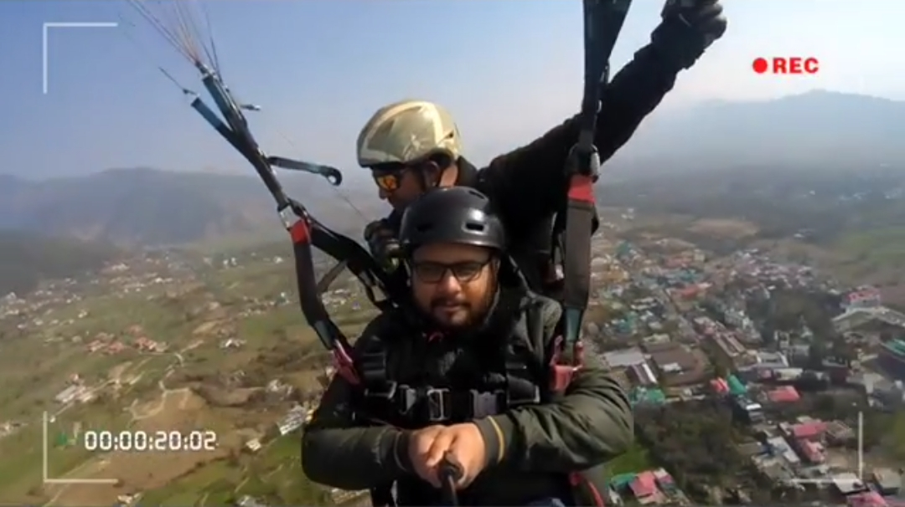

About Me
I am a data science professional with 4+ years of experience in the industry. I hold a Masters degree in Industrial Engineering and Operations Research from IIT Bombay. Currently, I am working with L&T Financial Services in the Advanced Analytics team where my role involves developing data science solutions for various business problems such as Acquisition Scorecard, Collection Prioritisation, Trend Prediction, Segmentation, Optimization and Allocation. At L&T Financial Services, I have worked on several projects that involved developing predictive models using various techniques such as logistic regression, decision trees, random forest, gradient boosting and neural networks. One of the most interesting projects that I worked on was developing a machine learning model to predict the credit risk of borrowers for the company's loan portfolio. This involved analyzing large volumes of data and identifying key variables that could impact credit risk. We then developed a model that could accurately predict credit risk and assign a score to each borrower. In addition, I have also worked on a project to optimize the allocation of resources for the company's sales and marketing teams. This involved developing a mathematical optimization model to determine the optimal allocation of sales and marketing resources across different geographies and channels. At IDFC First Bank, I worked on the Hyper Personalization Engine project where we developed machine learning models for targeted marketing communication across channels such as email, SMS, and social media. This involved analyzing customer data and developing models to predict the likelihood of customers responding to marketing campaigns. Overall, I have gained valuable experience in developing and deploying machine learning models for a variety of business problems. I am always looking for new challenges and opportunities to apply my skills and knowledge to new and exciting projects.
Education
| Degree | Year | School/College Name | Stream | Score |
|---|---|---|---|---|
| 10th | 2009 | CBSE | Science | 86% |
| 12th | 2011 | CBSE | Science | 76% |
| Bachelor's Degree | 2012-2016 | Dr. APJAKTU, Lucknow | Mechanical Engineering | 73% |
| Master's Degree | 2017-2019 | IIT Bombay | Industrial Engineering and Operations Research | 8.6 CPI |
| Specialization | Description | Certificate |
|---|---|---|
| Machine Learning Specialization | Studied modern machine learning concepts, including supervised learning (linear regression, logistic regression, neural networks, decision trees), unsupervised learning (clustering, anomaly detection), recommender systems, and reinforcement learning. | View PDF |
| Web Design for Everybody: Basics of Web Development & Coding | Write syntactically correct HTML5 and CSS3, and create interactive web experiences with JavaScript. | View PDF |
| Meta Marketing Analytics | Developed and honed essential marketing analytics skills, including basic principles of marketing, analytics tasks such as using SQL queries to pull data from a database and cleaning data using spreadsheets. Also developed a foundational understanding of statistics, explored common analytics methods used by marketers to evaluate and communicate the results of advertising campaigns and Meta Marketing analytics tools. | View PDF |
Professional Experience
IDFC FIRST BANK
9 July 2019 - 31 Sep 2021
Designation: Data Scientist
Role: New Frontiers.
- Hyper Personalisation Engine for Marketing through channels like APP/WEB, SMS, PN and email. Improving Customer Experience , Bringing cost efficiency and optimizing Business Processes via digital and analytic transformation.
- Conceptualized and Created incentive based on‑boarding Journey for Savings account customer to get better engagement, improve stickiness with bank and later creating opportunity for X‑sell and Up‑sell. Applied KMeans clustering to get different customer segment base on prod‑ uct/service penetration. Build on‑boarding strategy based on the segment.
- Ideate and Create about 5K tags for customers using different data source covering all aspects of customer persona like transaction behaviour, relationship with bank, off us relationship using bureau data, customer response from past campaigns and offer eligibility.
- Implemented end to end performance tracking and conversion for campaign from summarizing response to Tableau dashboard visualization.
- Policy implimentation and Pre‑approved offer generation for PL Xsell, Home Loan/ LAP Balance transfer.
- Created MIS for TAT from appointment to disbursal of Xsell PL,Call center churn and other MIS.
L&T Finance
1 Oct 2021 - 11 April 2023
Designation: Team Manager
Role: Advance Anlytics.
- Created and implemented First Generation Farm Loan Application Scorecard with STP and Non STP Journey to reduce underwriter TAT and increased scope of Business expansion.
- Developed 6th Generation Application Scorecard for TW Business with Major Updates like Higher LTV and Risk Based Pricing.
- Performed white space mapping for Personal Loan Business. Further Created a Risk based pricing Model to make competitive offer making sure target Return on Investment for each category.
- Co-developed RF and Bounce Model for soft calling based on Risk before due date and call prioritization for Bounced Cases.
DCB Bank
12 April 2023 - Till Now
Designation: Senior Manager
Role: Advance Anlytics.
- Propensity Modelling for Gold Loan X-Sell and TD Renewal.
- ECL computation.
- Anamoly detection for Anti Money Laundring.
Fun Stuff
| Activity | Description | Image |
|---|---|---|
| SUPRA SAE INDIA Student Formula |
|
|
| Kalsubai Trekking | Kalsubai Peak is a very popular trek in the Sahyadri region. It is the highest peak in Maharashtra at 5,400 ft | |
| Paragliding | The paragliding launch site is in the meadow at Billing (14 km north of Bir), at an elevation of 2400 meters |  |
| Others | Other Travels and Adventure | 


|
Contact Me
Name: Nishant Mani Tripathi
Email: nishant.akgec@gmail.com
LinkedIn: linkedin